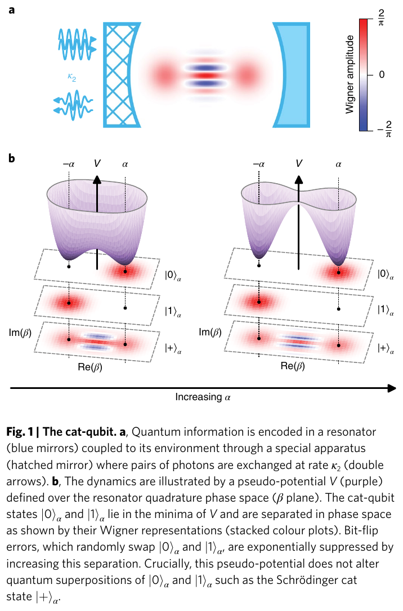
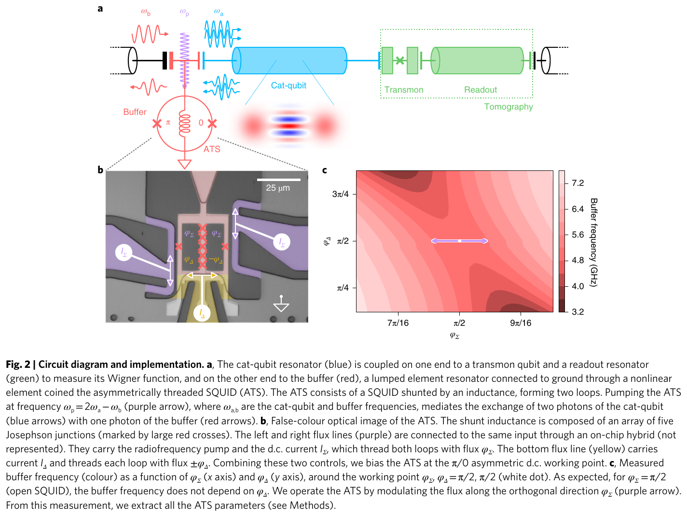
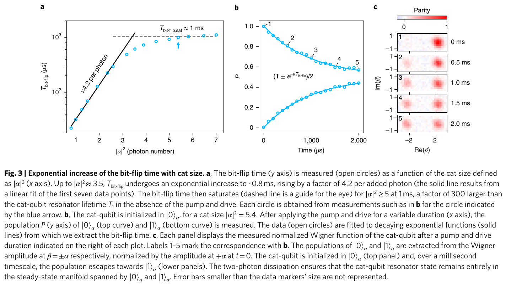
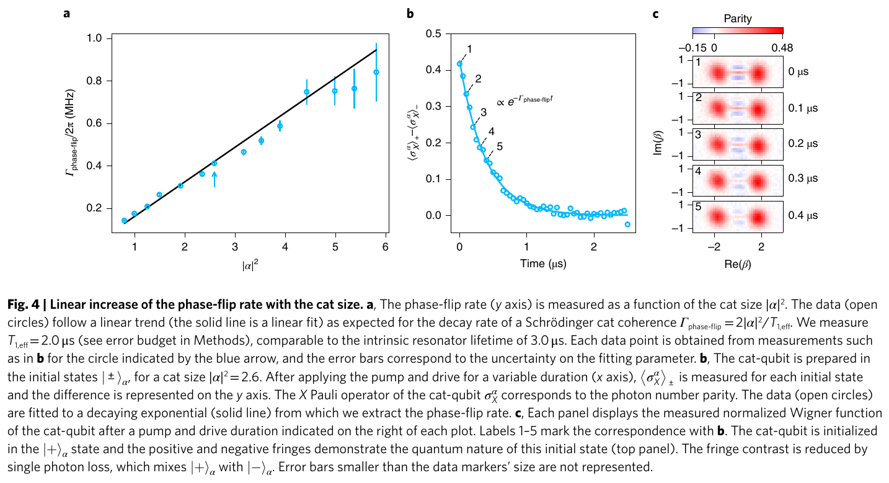
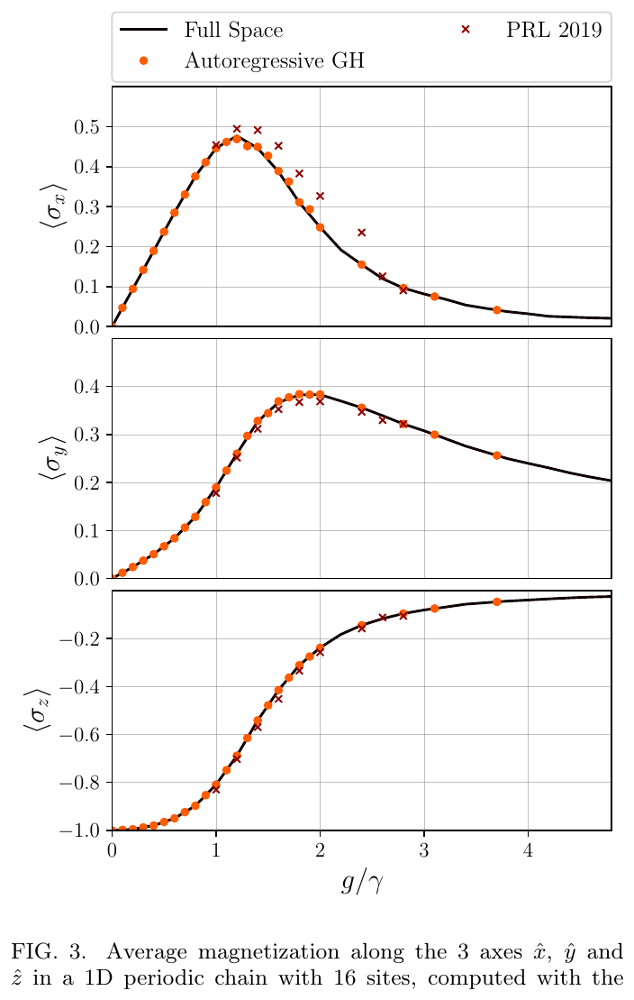
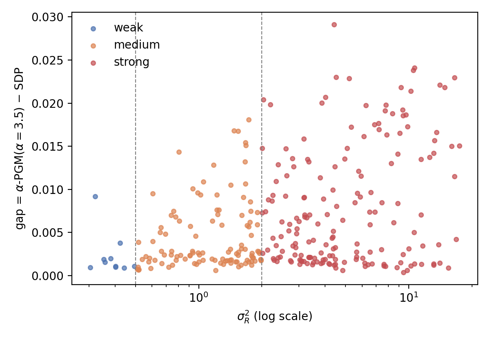
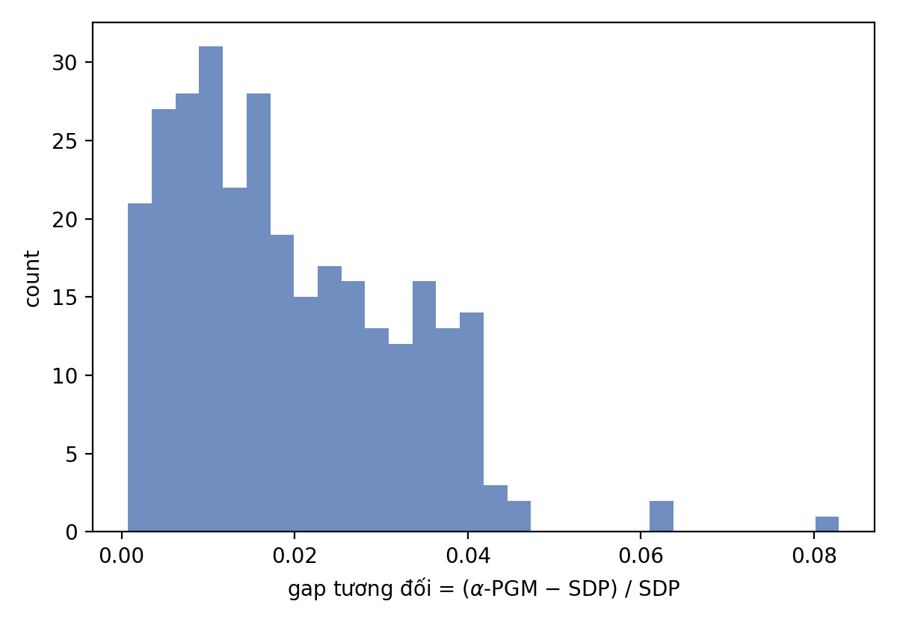

Module 16 · Future directions: PINN, Lindblad, QRC, cat qubits
From SDP labels to master equations, reservoirs and differentiable design
- Write the PINN-Lindblad loss and state the role of each term
- Explain the cat qubit and its two error laws
- Compare NG-RC, ESN and QRC on the static problem
- Recognise the scope and risk of each direction
📚 Source documents of this module (each file checked against its actual content)
| File in the archive | Paper (verified against its content) | Pages | Status | Link | Used in this module |
|---|---|---|---|---|---|
| A_RESEARCH_FOUNDATION/IDEAS_FUTURE_WORK/lescanne2020.pdf | Exponential suppression of bit-flips in a qubit encoded in an oscillator R. Lescanne, M. Villiers, T. Peronnin, A. Sarlette, M. Delbecq, B. Huard, T. Kontos, M. Mirrahimi, Z. Leghtas · 2020 · Nature Physics 16, 509 (doi:10.1038/s41567-020-0824-x) | 15 | Read, title matches | DOI · arXiv | Abstract, Figs. 1 to 4 (pp. 2 to 4), Methods (p. 5) read; Supplementary not in the file |
| F_FUTURE_DIRECTIONS/prototype_mary/progress_slides/progress_2026_07_28.pdf | Progress report: neural surrogate for the QPSK Helstrom problem T. T. Nghia · 2026 · Internal slides, 28 Jul 2026 | 10 | Read, title matches | No public link (get the file from the group shared folder) | All 10 pages read |
| F_FUTURE_DIRECTIONS/08_pinn_lindblad.md | 08 PINN-Lindblad Nhóm dự án · 2026 · Direction note 08 | 0 | Read, title matches | No public link (get the file from the group shared folder) | Internal note (.md): read in full, not a peer-reviewed paper |
| F_FUTURE_DIRECTIONS/07_qrc_backbone.md | 07 QRC / Reservoir Computing Nhóm dự án · 2026 · Direction note 07 | 0 | Read, title matches | No public link (get the file from the group shared folder) | Internal note (.md): read in full, not a peer-reviewed paper |
| F_FUTURE_DIRECTIONS/prototype_pinn/BAO_CAO.md | PINN-Lindblad prototype report Nhóm dự án · 2026 · 12-07-2026 | 0 | Read, title matches | No public link (get the file from the group shared folder) | Internal note (.md): read in full, not a peer-reviewed paper |
| F_FUTURE_DIRECTIONS/prototype_qrc/BAO_CAO.md | Reservoir-computing prototype report Nhóm dự án · 2026 · 12-07-2026 | 0 | Read, title matches | No public link (get the file from the group shared folder) | Internal note (.md): read in full, not a peer-reviewed paper |
| F_FUTURE_DIRECTIONS/02_differentiable_design.md | 02 Differentiable design Nhóm dự án · 2026 · Direction note 02 | 0 | Read, title matches | No public link (get the file from the group shared folder) | Internal note (.md): read in full, not a peer-reviewed paper |
| F_FUTURE_DIRECTIONS/05_active_learning.md | 05 Active learning Nhóm dự án · 2026 · Direction note 05 | 0 | Read, title matches | No public link (get the file from the group shared folder) | Internal note (.md): read in full, not a peer-reviewed paper |
| F_FUTURE_DIRECTIONS/06_beyond_fso.md | 06 Beyond FSO Nhóm dự án · 2026 · Direction note 06 | 0 | Read, title matches | No public link (get the file from the group shared folder) | Internal note (.md): read in full, not a peer-reviewed paper |
| F_FUTURE_DIRECTIONS/09_extrapolation_high_snr_multi_sigma.md | 09 Extrapolation Nhóm dự án · 2026 · 13-10-2026 | 0 | Read, title matches | No public link (get the file from the group shared folder) | Internal note (.md): read in full, not a peer-reviewed paper |
| F_FUTURE_DIRECTIONS/README.md | F_FUTURE_DIRECTIONS README Nhóm dự án · 2026 · The fixed roadmap | 0 | Read, title matches | No public link (get the file from the group shared folder) | Internal note (.md): read in full, not a peer-reviewed paper |
| F_FUTURE_DIRECTIONS/prototype_mary/refs/literature_review/pdf/reused_from_paper1/Koutny2022_GHDODensityParametrization.pdf | Positive-definite parametrization of mixed quantum states with deep neural networks F. Vicentini, R. Rossi, G. Carleo · 2022 · arXiv:2206.13488v1 | 9 | Partly read (long book) | arXiv | File name says Koutny but the authors are Vicentini et al. Abstract, Eqs. (7), (8), (21) to (28), Figs. 1 to 4 read |
Lecture (slides)
Use the ← → keys or the buttons; ⛶ opens full-screen presentation.
The five-step roadmap that was fixed
| Step | Direction | File | Planned effort |
|---|---|---|---|
| 1 | QPSK | 01_mary_signaling.md | 2 to 3 months |
| 2 | 8-PSK | 01 + 05 (active learning) | attached to step 1 |
| 3 | RC / QRC | 07_qrc_backbone.md | 1.5 months |
| 4 | Real-space PINN | 08_pinn_lindblad.md (1) | 3 to 4 months for all of 08 |
| 5 | PINN-Lindblad + time-domain RC | 08 (2) + 07 | the point of convergence |
- \(N_{\text{anchor}}\)number of sparse SDP anchor labels
- \(5\%\)threshold set in the direction-08 document
Why move to a time-dependent problem
- \(\kappa\)loss rate
- \(\bar n_{th}\)thermal photon number, mapped to the receiver noise \(\sigma^2\)
- \(a\)photon annihilation operator
Paper 1 learns a static map from channel parameters to the final state, so all physics in between is squeezed into 36,000 SDP labels. The equation above describes that process exactly, so it can stand in for labels.
One trajectory covers the whole turbulence axis
- \(\eta_0\)initial transmissivity of the path
- \(I\)one turbulence irradiance realisation
- \(t_I\)effective time matching \(I\)
| \(I\) | \(t_I\ (\kappa=1,\ \eta_0=0.25)\) |
|---|---|
| 0.5 | 2.079 |
| 1.0 | 1.386 |
| 2.0 | 0.693 |
| 3.5 | 0.134 |
Checked numerically: integrating the master equation to \(t=0.7\) from \(\alpha=1.5\) gives \(\alpha(t)=1.0570\), differing from the analytic solution by \(8.6\times10^{-11}\) (Frobenius norm, \(d=24\)).
The Cholesky head along time
- \(L_\theta\)lower-triangular matrix, softplus on the diagonal
- \(t\)time input added to the network
- The Cholesky head is taken unchanged from paper 1, so \(\hat\rho(t)\) is valid even before the residual converges.
- Existing PINN-Lindblad papers keep physics with penalty terms; here validity holds by construction along the whole trajectory.
- The residual only multiplies \(16\times16\) matrices with the sparse \(a,a^{\dagger}\), is cheap, and autograd passes through it.
The cat qubit: encoding in a resonator

Nguồn: Lescanne et al., Exponential suppression of bit-flips in a qubit encoded in an oscillator, Nature Physics 16, 509 (2020), Fig. 1 (p. 2)
- \(|\pm\rangle_\alpha\)\(\mathcal N_\pm(|\alpha\rangle\pm|{-}\alpha\rangle)\)
- \(\mathcal N_\pm\)\(1/\sqrt{2(1\pm e^{-2|\alpha|^2})}\)
A cat qubit is a qubit encoded in the coherent states \(|\pm\alpha\rangle\) of a resonator, named after Schrödinger’s cat. The mean photon number is about \(|\alpha|^2\).
Timeline: cat qubits, PINN, reservoir and the project
The PINN-Lindblad loss
- ICinitial condition, known exactly, free
- \(N_c\)number of collocation points, chosen freely, no labels
- \(k\)a few anchor points with SDP labels
The Lindblad residual and its verification
- \(h\)central-difference step, used to cross-check autograd
- Autograd with respect to the input \(t\) (forward mode or differences) provides the derivative in the loss.
- Ground truth: the analytic solution \(|\alpha e^{-\kappa t/2}\rangle\); thermal noise has a closed Gaussian solution.
- Compare matrix element by element, no SDP needed.
The phase-space variant
- \(W(x,p,t)\)Wigner function, a scalar field
- \((x,p)\)continuous phase-space coordinates
| Criterion | Real space (Fock) | Phase space (Wigner) |
|---|---|---|
| Output | \(d\times d\) | scalar field |
| Truncation | needs \(d=16\) | not needed |
| Validity | Cholesky, automatic | hard to guarantee |
| Computing \(P_e\) | existing Helstrom layer | must rebuild \(\rho\) from \(W\) |
Reservoir computing: only the readout is trained
- \(X\)reservoir features or polynomial library
- \(\lambda\)regularisation strength
| Backbone | What is trained | Feature count |
|---|---|---|
| NG-RC degree 2 | readout only | 55 = 1+9+45 |
| NG-RC degree 3 | readout only | 220 |
| ESN | readout only | 300 nodes |
| QRC | readout only | \(n+\binom n2\) local observables |
The reservoir is fixed and untrained. Only the linear readout is solved by ridge, in under a millisecond for 200 samples (QRC prototype report).
QRC: using quantum dynamics as an embedding
- \(n\)qubits of the reservoir (6 to 10)
- \(\sigma_z\)Pauli Z operator
| \(n\) | local observables | \(2^n\) | \(4^n\) |
|---|---|---|---|
| 6 | 21 | 64 | 4,096 |
| 8 | 36 | 256 | 65,536 |
| 10 | 55 | 1024 | 1,048,576 |
The reservoir is a transverse-field Ising network or Kerr oscillators with fixed random parameters; the input is encoded in the local fields. The gate in document 07: a static QRC must beat NG-RC (\(7.4\times10^{-4}\)).
The two-photon dissipation mechanism

Nguồn: Lescanne et al., Exponential suppression of bit-flips in a qubit encoded in an oscillator, Nature Physics 16, 509 (2020), Fig. 2 (p. 3)
- \(b,\kappa_b\)the buffer mode and its energy decay rate
- \(\alpha^2=-\epsilon_d/g_2^{*}\)the buffer drive amplitude sets \(\alpha\)
A pair of resonator photons is exchanged for one buffer photon, so \(|0\rangle_\alpha,|1\rangle_\alpha\) and every superposition of them are steady states.
The confinement condition of the cat qubit
- \(\kappa_{\text{conf}}\)confining rate of the pseudo-potential
- \(\kappa_{\text{err}}\)effective local error rate; in the experiment \(\kappa_{\text{err}}/2\pi=53\) kHz
With \(\kappa_2/2\pi=40\) kHz: \(|\alpha|^2\gt53/(2\cdot40)=0.66\), matching the "about 0.7" of the paper (p. 4).
The truncation floor versus Fock dimension
- \(c_{d-1}\)the last retained Fock coefficient
| \(d\) | Prototype report (2026-07-12) | |
|---|---|---|
| 12 | 2.7e-4 | 2.7\times10^{-3} |
| 16 | 2.6e-6 | 4.1\times10^{-5} |
| 20 | 1.4e-8 | 3.8\times10^{-7} |
The two columns use different \(\alpha\), so magnitudes differ; the common point is that the floor drops by orders of magnitude each time \(d\) grows by 4. Choose \(d\) from the residual target.
Trajectory coverage versus T and eta0
- \(\eta_0\)set to \(0.25\) in the example (illustration)
- \(\kappa=1\)
| \(T\) | \(I_{\min}\) | \(I_{\max}\) |
|---|---|---|
| 1.0 | 1.472 | 4.0 |
| 2.0 | 0.541 | 4.0 |
| 3.0 | 0.199 | 4.0 |
The PINN prototype reproduces a trajectory with no labels
- \(\bar\rho_{\text{quad}}\)turbulence average by quadrature on the learned trajectory
- \(\bar\rho_{\text{MC}}\)direct Monte Carlo, 500 realisations
| Check | Result |
|---|---|
| Semigroup trick | \(2\times10^{-16}\) |
| Label-free network | \(3.1\times10^{-3}\) |
| Quadrature versus MC | \(2.8\times10^{-3}\) |
| Checks passed | 5 / 5 |
F_FUTURE_DIRECTIONS/prototype_pinn/BAO_CAO.md, Sec. 2. For a single trajectory only.
Bit-flip suppression grows exponentially with the cat size

Nguồn: Lescanne et al., Exponential suppression of bit-flips in a qubit encoded in an oscillator, Nature Physics 16, 509 (2020), Fig. 3 (p. 3)
- \(T_1\)3.0\ \mu\text{s}
- \(T_*\)\(0.8\) ms at \(n_*=3.5\) (p. 3)
| \(|\alpha|^2\) | \(T_{\text{bf}}\ (\mu s)\) |
|---|---|
| 1.0 | 22 |
| 2.0 | 93 |
| 3.5 | 800 |
| 5.0 | 1000 |
| 7.0 | 1000 |
Table values are extrapolations of the exponential model anchored at \(0.8\) ms (illustration), not point measurements.
Phase-flips grow linearly, giving biased noise

Nguồn: Lescanne et al., Exponential suppression of bit-flips in a qubit encoded in an oscillator, Nature Physics 16, 509 (2020), Fig. 4 (p. 4)
- \(T_{1,\text{eff}}\)2.0\ \mu\text{s}
- \(|\alpha|^2=2.6\)matches the Fig. 4a data near 0.4 MHz
Only phase-flips remain to be actively corrected, so the error-correcting code needs only one dimension (a repetition code).
Projected error times for larger cat qubits
- \(T_1=1\) msstate of the art of a cavity per the paper (p. 4)
| \(|\alpha|^2\) | Bit-flip time (paper) | Phase-flip time | Bias ratio |
|---|---|---|---|
| 5 | \(\sim1\) s | \(100\ \mu\text{s}\) | \(10^{4}\) |
| 10 | \(\sim0.5\) h | \(50\ \mu\text{s}\) | \(3.6\times10^{7}\) |
The bias ratios are \(1\ \text{s}/100\ \mu\text{s}=10^4\) and \(1800\ \text{s}/50\ \mu\text{s}=3.6\times10^7\). The bit-flip times are the authors’ projections, not measurements.
Learning curve: NG-RC beats ridge at 200 samples
- \(1.55\times10^{-4}\)MSE of the paper-1 MLP at 36,000 samples
| \(n_{\text{train}}\) | ridge-raw | NG-RC → Pe | NG-RC → Chol → Helstrom | ESN → Pe |
|---|---|---|---|---|
| 30 | 1.12e-3 | 2.25e-2 | 6.40e-3 | 9.77e-3 |
| 60 | 9.79e-4 | 1.98e-3 | 1.37e-3 | 1.06e-2 |
| 120 | 9.23e-4 | 1.14e-3 | 1.01e-3 | 1.01e-2 |
| 200 | 9.12e-4 | 7.40e-4 | 7.64e-4 | 6.49e-3 |
At 200 samples NG-RC is about 4.8 times worse than the MLP in MSE while using 180 times fewer labels (36,000 / 200). A fair comparison needs the MLP’s own learning curve at 200 samples (QRC report).
The risk of a parametric PINN
- \(\lambda\)weights; a wrong scale is the loss imbalance seen in paper 1
- A parametric PINN (conditioned on many channel parameters) is harder to train than a single-system PINN; this is the main open risk.
- Gate at prompt 3 of prototype_pinn/PROMPTS_12.md: extend from one trajectory to a network conditioned on \(\alpha\) and \(\kappa\).
- The GradNorm experience of direction 00 can be reused.
The weak point of the Wigner variant
- \(\hat W_{mn}\)Wigner kernel of element \(mn\)
- \(W\) may be negative so there is no "Cholesky for \(W\)"; the rebuilt \(\rho\) must be PSD.
- Rebuilding \(\rho\) adds a layer of error before Helstrom; study the inverse map before promising results.
- The decisive advantage: the output does not change for large \(d\), exactly the pain point of 8-PSK M-ary with \(d\ge48\).
ESN gives a negative result on the static problem
- \(\text{ESN}\)300-node reservoir, input held constant for 50 steps
- A random reservoir adds no information to a static problem, only high-dimensional noise.
- The value of a reservoir lies in time-dependent problems, so the role of ESN/QRC moves to the stage combined with direction 08.
- Every backbone comparison must have ridge-raw as a floor baseline.
GHDO: parametrising mixed states with deep networks

Nguồn: Vicentini, Rossi, Carleo, arXiv:2206.13488 (2022), Fig. 1, 2 (p. 3)
- \(R,K\)local rank and number of plaquettes
The GHDO is a deep network encoding positive semi-definite density operators of exponential rank with polynomial resources. The same spirit as the project Cholesky head.
The dissipative Ising model as a benchmark for mixed states

Nguồn: Vicentini, Rossi, Carleo, arXiv:2206.13488 (2022), Fig. 3 (p. 6)
- \(V/\gamma=2\)paper parameters, a 16-site chain
- \(S_2\)Rényi-2 entropy, measuring mixedness
Figures produced by the M-ary prototype

Nguồn: prototype_mary, pgm_gap_scatter

Nguồn: prototype_mary, pgm_gap_histogram
Measured absolute gap: \(0.036\le|P_e^{\text{PGM}}-P_e^{\text{SDP}}|\le0.104\)
Bit-flip saturation and the experiment limits
- \(\chi_{qa}\)dispersive coupling of the cat qubit to the tomography transmon
- The authors attribute the 1 ms saturation to the coupling to the tomography transmon (thermal occupation 1%, \(T_{1,q}=5\ \mu s\)).
- In earlier experiments the bit-flip suppression was blocked because the circuit itself damaged the resonator (Methods).
- Thermal photon in the buffer: \(\kappa_2\alpha^2\gg\chi_{ba}\) (condition 1) or \(\chi_{ba}/\kappa_b\ll\pi/2\) (condition 2); this experiment meets condition 2.
Differentiable link design
- \(\hat P_e\)differentiable output of the surrogate
- \(\eta\)gradient step
| Method | Cost per step | Property |
|---|---|---|
| Bisection on SDP | 85 ms | slow, exact |
| Grid + surrogate | 0.1 ms | discrete |
| Gradient + surrogate | 0.1 ms | continuous, fastest |
Active learning cuts the SDP label cost
- \(t_{\text{SDP}}\)85.24 ms per sample (paper-1 measurement)
| Acquisition strategy | Uncertainty measure | Extra cost |
|---|---|---|
| Random | - | 0 |
| Ensemble disagreement | variance over 5 seeds | 5x training |
| Physics-guided | \(\sigma_R^2\in[0.3,3]\) | 0 |
| Disagreement of two routes | operator-route versus direct-route | 2x training |
Extending to other quantum SDPs
| Quantity | Differentiable layer | Feasible |
|---|---|---|
| Negativity | \(\mathcal N=\sum_{\lambda_i\lt0}|\lambda_i|\) | partial transpose + eigvalsh |
| Fidelity | \(F=\bigl(\mathrm{Tr}\sqrt{\sqrt\rho\sigma\sqrt\rho}\bigr)^2\) | matrix square root, closed |
| Diamond norm | \(\|\Phi\|_\diamond\) | needs a learned head or an SDP layer |
- structured headconstraint satisfied by structure (PSD, unit trace, Choi)
Extrapolating outside the training range
- \(\bar n\)mean photon number
- \(\Delta_\theta\)the network learns only the deviation from the baseline
| Probe region | Result (probe_v3) |
|---|---|
| \(\bar n\le1.1\), 3 \(\sigma\) | Surrogate \(3.7\times10^{-9}\), closed form \(1.5\times10^{-2}\) |
| \(\sigma\in[0.05,2.0]\) | Surrogate wins at every \(\sigma\), from ×32 to ×14000 |
| \(\bar n\in[3,16]\) | Closed form wins, from ×2.9 to ×1900 in MSE |
F_FUTURE_DIRECTIONS/09_extrapolation_high_snr_multi_sigma.md, dated 13 Oct 2026.
The link to the project is only at the level of method: both design a target quantity so that one error type is suppressed exponentially in one free parameter. The cat-qubit direction is a distant open direction, with no prototype yet in the folder.
A real case: cat qubits suppress bit-flips exponentially
The group places the cat qubit in a superconducting resonator and adds two-photon dissipation through a new nonlinear dipole (the ATS). Result: a bit-flip time of about 1 ms, 300 times the single-photon lifetime \(T_1=3.0\ \mu\)s, while the phase-flip only grows linearly.
\[ \underbrace{T_{\text{bit-flip}}\propto4.2^{|\alpha|^2}}_{\text{exponential}},\qquad \underbrace{\Gamma_{\text{phase-flip}}=2|\alpha|^2/T_{1,\text{eff}}}_{\text{linear}} \]QPSK result: the correction head closes the PGM gap
- \(\text{pe\_mse}\)MSE of \(P_e\) on the test set
| Configuration | n_params | pe_mse | Valid state |
|---|---|---|---|
| (a) PGM | 268 672 | 3.848e-3 | N/A |
| (b) correction + \(\sigma\) | 270 033 | 9.037e-4 | yes (\(\sim10^{-7}\)) |
| (c) direct (paper 1) | 3 761 | 8.848e-4 | no |
F_FUTURE_DIRECTIONS/prototype_mary/progress_slides/progress_2026_07_28.pdf, page 8. Speed: surrogate (state + PGM) \(0.752\) ms, nearly 2529 times the SDP on Kaggle.
Summary: evidence and risk of each direction
| Direction | Evidence so far | Main risk |
|---|---|---|
| PINN-Lindblad | Frob \(3.1\times10^{-3}\), 0 labels, one trajectory | Parametric PINN |
| QRC / NG-RC | NG-RC \(7.4\times10^{-4}\) at 200 samples | static ESN negative; QRC not run yet |
| Gradient design | not run, only needs a checkpoint | exploiting model error |
| Cat qubit | Lescanne 2020: ×300 versus \(T_1\) | no prototype yet |
- \(N_{\text{anchor}}=1\,800\)5% of 36,000, a target assumption
Detailed notes
In plain words
There are three ways to need fewer labels: tell the network the rules (PINN-Lindblad), use a simple model that needs few labels (reservoir), and pick the right points to ask (active learning). The cat qubit lives in another field, but it shows a similar idea: design things so that one error type vanishes by itself.
What a cat qubit is
A cat qubit encodes one qubit in two opposite coherent states \(|\alpha\rangle\) and \(|{-}\alpha\rangle\) of a resonator (a container for microwave light), named after Schrödinger’s cat because a superposition of the two states is a cat state. A two-photon dissipation pulls any drift back to these two states without destroying the superposition between them. The bit-flip error (a jump from \(|\alpha\rangle\) to \(|{-}\alpha\rangle\)) drops exponentially in \(|\alpha|^2\), while the phase-flip only grows linearly.
Theory and historical background
Lescanne et al. (2020) cite Shor (2001) for quantum error correction, Guillaud and Mirrahimi (2013) for repetition cat qubits, Leghtas et al. (2015) and Touzard et al. (2018) for confinement by two-photon dissipation. On the machine-learning branch, Vicentini et al. (2022) parametrise density operators with deep networks. Directions 07 and 08 of the project link these branches to the Helstrom problem.
Worked examples
- \(\alpha=1.5,\ \kappa=1,\ t=0.7\Rightarrow\eta=e^{-0.7}=0.4966\).
- \(\alpha(t)=1.5\sqrt\eta=1.0570\).
- Remaining photon number: \(|\alpha(t)|^2=1.1173\), equal to \(2.25\eta\).
- \(\eta_0=0.25,\ \kappa T=2\). (assumption)
- \(I_{\min}=e^{-2}/0.25=0.541\), \(I_{\max}=4\).
- A realisation \(I=5\) lies outside the range.
- \(\kappa_{\text{err}}/2\pi=53\) kHz, \(\kappa_2/2\pi=40\) kHz.
- \(|\alpha|^2\gt53/80=0.662\).
- The paper says "about 0.7", matching.
- \(|\alpha|^2=5\): \(T_{\text{phase}}=1\ \text{ms}/10=100\ \mu\)s.
- Bias ratio \(=1\ \text{s}/100\ \mu\text{s}=10^4\) (projection).
- Only a one-dimensional repetition code is needed for phase-flips.
- \(36,000\times85.24\) ms \(=51.1\) minutes.
- 5% = 1800 labels, 2.6 minutes. (assumed target)
- At \(M=4,d=32\) each label is about 100 times dearer (document 05).
Case study
Progress report of 28 Jul 2026: a 126,000-sample QPSK set, with the correction head reducing the PGM pe_mse from \(3.848\times10^{-3}\) to \(9.037\times10^{-4}\), close to the direct predictor at \(8.848\times10^{-4}\).
Pitfalls in exercises
- Calling the current network a PINN (document 09: it is not).
- Mixing the channel time scale with the physical propagation time.
- Treating the cat-qubit projections of 1 s and 0.5 h as measurements.
- Comparing backbones without ridge-raw.
Quick self-check
Deep practice
Open the bank of 45 multiple-choice questions and 5 code-writing tasks →
References
- R. Lescanne et al., Nature Physics 16, 509 (2020).
- F. Vicentini, R. Rossi, G. Carleo, arXiv:2206.13488 (2022).
- F_FUTURE_DIRECTIONS: README, 02, 05, 06, 07, 08, 09 (.md).
- F_FUTURE_DIRECTIONS: prototype_pinn and prototype_qrc, BAO_CAO.md.
- F_FUTURE_DIRECTIONS: prototype_mary, progress slides of 28 Jul 2026.